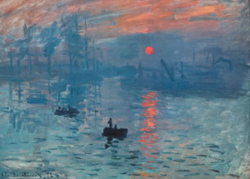
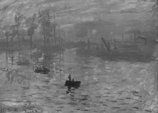

CNN-Color2Gray
Introduction
This is an implementation of Color2Gray with convolutional neural networks.
Example
original image

naive color transformation

Color2Gray
Usage
qlua main.lua -h
qlua main.lua -inp ./color.png
You can also use th but then no image will be displayed.